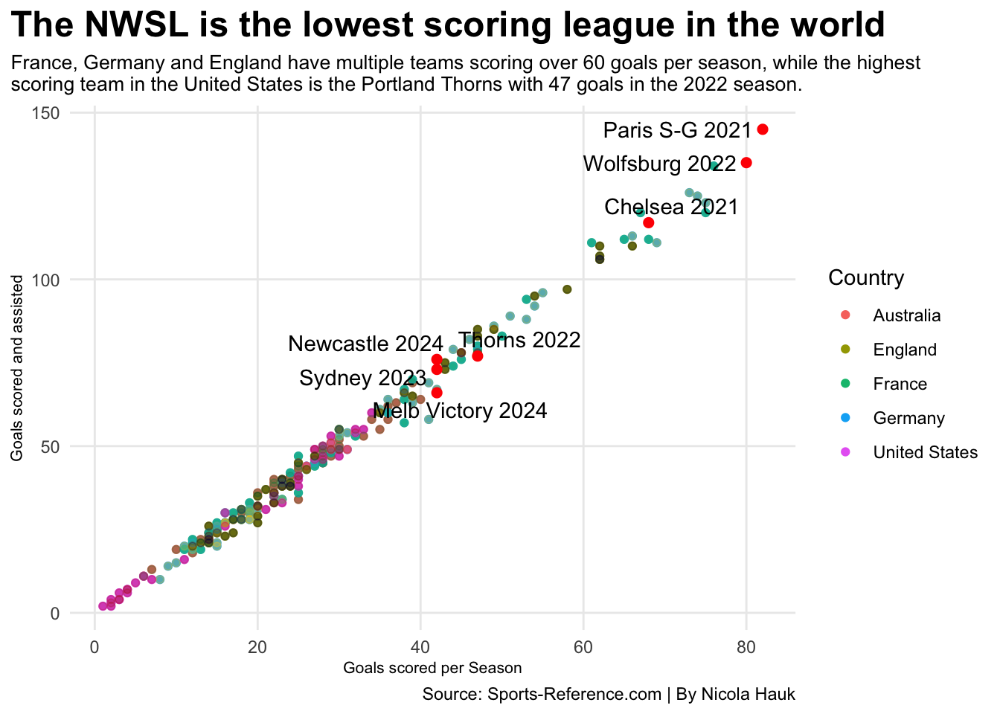

Code
library(tidyverse)
library(ggalt)
library(ggtext)
library(ggrepel)
WSLBasic21 <- read_csv("WSL/WSL 20-21 basic stats.csv") |> mutate(Season = 2021, SquadSeason = paste(Squad, Season))
WSLBasic22 <- read_csv("WSL/WSL 21-22 basic stats.csv") |> mutate(Season = 2022, SquadSeason = paste(Squad, Season))
WSLBasic23 <- read_csv("WSL/WSL 22-23 basic stats.csv") |> mutate(Season = 2023, SquadSeason = paste(Squad, Season))
WSLBasic24 <- read_csv("WSL/WSL 23-24 basic stats.csv") |> mutate(Season = 2024, SquadSeason = paste(Squad, Season))
WSLBasicpast4 <- bind_rows(WSLBasic21, WSLBasic22, WSLBasic23, WSLBasic24) |>
mutate(Country = "England")
NWSLBasic21 <- read_csv("NWSL/NWSL 2021 basic stats.csv") |> mutate(Season = 2021, SquadSeason = paste(Squad, Season))
NWSLBasic22 <- read_csv("NWSL/NWSL 2022 basic stats.csv") |> mutate(Season = 2022, SquadSeason = paste(Squad, Season))
NWSLBasic23 <- read_csv("NWSL/NWSL 2023 basic stats.csv") |> mutate(Season = 2023, SquadSeason = paste(Squad, Season))
NWSLBasic24 <- read_csv("NWSL/NWSL 2024 basic stats.csv") |> mutate(Season = 2024, SquadSeason = paste(Squad, Season))
NWSLBasicpast4 <- bind_rows(NWSLBasic21, NWSLBasic22, NWSLBasic23, NWSLBasic24) |>
mutate(Country = "United States")
FemBasic21 <- read_csv("Féminine/Fem 20-21 basic stats.csv") |> mutate(Season = 2021, SquadSeason = paste(Squad, Season))
FemBasic22 <- read_csv("Féminine/Fem 21-22 basic stats.csv") |> mutate(Season = 2022, SquadSeason = paste(Squad, Season))
FemBasic23 <- read_csv("Féminine/Fem 22-23 basic stats.csv") |> mutate(Season = 2023, SquadSeason = paste(Squad, Season))
FemBasic24 <- read_csv("Féminine/Fem 23-24 basic stats.csv") |> mutate(Season = 2024, SquadSeason = paste(Squad, Season))
FemBasicpast4 <- bind_rows(FemBasic21, FemBasic22, FemBasic23, FemBasic24) |>
mutate(Country = "France")
BLBasic21 <- read_csv("Bundesliga/BL 20-21 basic stats.csv") |> mutate(Season = 2021, SquadSeason = paste(Squad, Season))
BLBasic22 <- read_csv("Bundesliga/BL 21-22 basic stats.csv") |> mutate(Season = 2022, SquadSeason = paste(Squad, Season))
BLBasic23 <- read_csv("Bundesliga/BL 22-23 basic stats.csv") |> mutate(Season = 2023, SquadSeason = paste(Squad, Season))
BLBasic24 <- read_csv("Bundesliga/BL 23-24 basic stats.csv") |> mutate(Season = 2024, SquadSeason = paste(Squad, Season))
BLBasicpast4 <- bind_rows(BLBasic21, BLBasic22, BLBasic23, BLBasic24) |>
mutate(Country = "Germany")
Aussiebasic21 <- read_csv("Australia/A 20-21 basic stats.csv") |> mutate(Season = 2021, SquadSeason = paste(Squad, Season))
Aussiebasic22 <- read_csv("Australia/A 21-22 basic stats.csv") |> mutate(Season = 2022, SquadSeason = paste(Squad, Season))
Aussiebasic23 <- read_csv("Australia/A 22-23 basic stats.csv") |> mutate(Season = 2023, SquadSeason = paste(Squad, Season))
Aussiebasic24 <- read_csv("Australia/A 23-24 basic stats.csv") |> mutate(Season = 2024, SquadSeason = paste(Squad, Season))
Aussiebasicpast4 <- bind_rows(Aussiebasic21, Aussiebasic22, Aussiebasic23,Aussiebasic24) |>
mutate(Country = "Australia")
AussieDef21 <- read_csv("Australia/A 20-21 def stats.csv") |> mutate(Season = 2021, SquadSeason = paste(Squad, Season))
AussieDef22 <- read_csv("Australia/A 21-22 def stats.csv") |> mutate(Season = 2022, SquadSeason = paste(Squad, Season))
AussieDef23 <- read_csv("Australia/A 22-23 def stats.csv") |> mutate(Season = 2023, SquadSeason = paste(Squad, Season))
AussieDef24 <- read_csv("Australia/A 23-24 def stats.csv") |> mutate(Season = 2024, SquadSeason = paste(Squad, Season))
AussieDefpast4 <- bind_rows(AussieDef21, AussieDef22, AussieDef23,AussieDef24)|>
mutate(Country = "Australia")
BLDef23 <- read_csv("Bundesliga/BL 22-23 def stats.csv") |> mutate(Season = 2023, SquadSeason = paste(Squad, Season))
BLDef24 <- read_csv("Bundesliga/BL 23-24 def stats.csv") |> mutate(Season = 2024, SquadSeason = paste(Squad, Season))
BLDefpast2 <- bind_rows(BLDef23, BLDef24)|>
mutate(Country = "Germany")
FemDef22 <- read_csv("Féminine/Fem 21-22 def stats.csv") |> mutate(Season = 2022, SquadSeason = paste(Squad, Season))
FemDef23 <- read_csv("Féminine/Fem 22-23 def stats.csv") |> mutate(Season = 2023, SquadSeason = paste(Squad, Season))
FemDef24 <- read_csv("Féminine/Fem 23-24 def stats.csv") |> mutate(Season = 2024, SquadSeason = paste(Squad, Season))
FemDefpast3 <- bind_rows(FemDef22, FemDef23, FemDef24)|>
mutate(Country = "France")
NWSLDef21 <- read_csv("NWSL/NWSL 2021 def stats.csv") |> mutate(Season = 2021, SquadSeason = paste(Squad, Season))
NWSLDef22 <- read_csv("NWSL/NWSL 2022 def stats.csv") |> mutate(Season = 2022, SquadSeason = paste(Squad, Season))
NWSLDef23 <- read_csv("NWSL/NWSL 2023 def stats.csv") |> mutate(Season = 2023, SquadSeason = paste(Squad, Season))
NWSLDef24 <- read_csv("NWSL/NWSL 2024 def stats.csv") |> mutate(Season = 2024, SquadSeason = paste(Squad, Season))
NWSLDefpast4 <- bind_rows(NWSLDef21, NWSLDef22, NWSLDef23, NWSLDef24)|>
mutate(Country = "America")
NWSLDefpast3 <- bind_rows(NWSLDef21, NWSLDef22, NWSLDef23)|>
mutate(Country = "America")
WSLDef21 <- read_csv("WSL/WSL 20-21 def stats.csv") |> mutate(Season = 2021, SquadSeason = paste(Squad, Season))
WSLDef22 <- read_csv("WSL/WSL 21-22 def stats.csv") |> mutate(Season = 2022, SquadSeason = paste(Squad, Season))
WSLDef23 <- read_csv("WSL/WSL 22-23 def stats.csv") |> mutate(Season = 2023, SquadSeason = paste(Squad, Season))
WSLDef24 <- read_csv("WSL/WSL 23-24 def stats.csv") |> mutate(Season = 2024, SquadSeason = paste(Squad, Season))
WSLDefpast4 <- bind_rows(WSLDef21, WSLDef22, WSLDef23, WSLDef24)|>
mutate(Country = "England")
Top5basicpast4 <- bind_rows(Aussiebasicpast4, BLBasicpast4, FemBasicpast4,NWSLBasicpast4, WSLBasicpast4)
top20 <- Top5basicpast4 |> top_n(20, wt=Gls)
Topscoringteam <- Top5basicpast4|> group_by(Country)|> filter(Gls == max(Gls))
ggplot() +
geom_point(data=Top5basicpast4, aes(x=Gls, y=`G+A`, color=Country)) +
#geom_smooth(data=Top5basicpast4, aes(x=Gls, y=`G+A`), method="lm", se=FALSE)+
geom_point(data=Aussiebasicpast4, aes(x=Gls, y=`G+A`), color="#00843D", alpha=.3)+
geom_point(data=BLBasicpast4, aes(x=Gls, y=`G+A`), color="#ffce00", alpha=.3)+
geom_point(data=FemBasicpast4, aes(x=Gls, y=`G+A`), color="#2FAEE0", alpha=.3)+
geom_point(data=NWSLBasicpast4, aes(x=Gls, y=`G+A`), color="#BB2533", alpha=.3)+
geom_point(data=WSLBasicpast4, aes(x=Gls, y=`G+A`), color="#000040", alpha=.3)+
geom_point(data=Topscoringteam, aes(x=Gls, y=`G+A`), color="red", size=2)+
geom_text_repel(data=Topscoringteam, aes(x=Gls, y=`G+A`, label=SquadSeason)) +
labs(
x="Goals scored per Season",
y="Goals scored and assisted",
title="The NWSL is the lowest scoring league in the world",
subtitle="France, Germany and England have multiple teams scoring over 60 goals per season, while the highest\nscoring team in the United States is the Portland Thorns with 47 goals in the 2022 season.",
caption="Source: Sports-Reference.com | By Nicola Hauk"
) +
theme_minimal() +
theme(
plot.title = element_text(size = 18, face = "bold"),
axis.title = element_text(size = 8),
plot.subtitle = element_text(size=10),
panel.grid.minor = element_blank(),
plot.title.position = "plot"
) 